Topics: Standardization and the normal distribution.
Below are practice problems tagged for Lecture 16 (rendered directly from the original exam/quiz sources). By default, problems are sorted from easiest to hardest by average score; problems without a score are listed last.
In addition to the plum DataFrame, we also have access to the season DataFrame, which contains statistics on all players in the WNBA in the 2021 season. The first few rows of season are shown below. (Remember to keep the data description from the top of the exam open in another tab!)
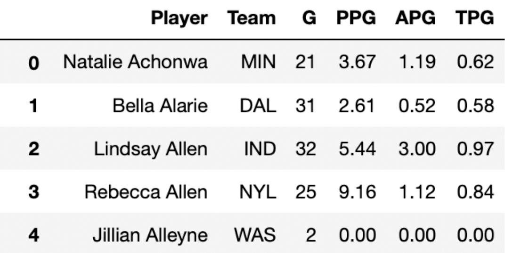
Each row in season corresponds to a single player. For each player, we have: - 'Player' (str), their name - 'Team' (str), the three-letter code of the team they play on - 'G' (int), the number of games they played in the 2021 season - 'PPG' (float), the number of points they scored per game played - 'APG' (float), the number of assists (passes) they made per game played - 'TPG' (float), the number of turnovers they made per game played
Note that all of the numerical columns in season must contain values that are greater than or equal to 0.
Problem 1.1
Which of the following is the best choice for the index of season?
'Player'
'Team'
'G'
'PPG'
Answer:'Player'
Ideally, the index of a DataFrame is unique, so that we can use it to “identify” the rows. Here, each row is about a player, so 'Player' should be the index. 'Player' is the only column that is likely to be unique; it is possible that two players have the same name, but it’s still a better choice of index than the other three options, which are definitely not unique.
Difficulty: ⭐️
The average score on this problem was 95%.
Problem 1.2
Note: For the rest of the exam, assume that the index of season is still 0, 1, 2, 3, …
Below is a histogram showing the distribution of the number of turnovers per game for all players in season.
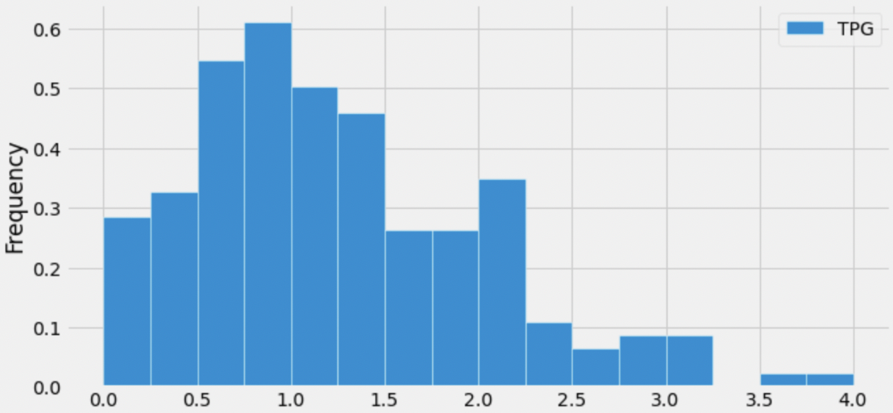
Suppose, throughout this question, that the mean number of turnovers per game is 1.25. Which of the following is closest to the median number of turnovers per game?
0.5
0.75
1
1.25
1.5
1.75
Answer: 1
The median of a distribution is the value that is “halfway” through the distribution, i.e. the value such that half of the values in the distribution are larger than it and half the values in the distribution are smaller than it.
Visually, we’re looking for the location on the x-axis where we can draw a vertical line that splits the area of the histogram in half. While it’s impossible to tell the exact median of the distribution, since we don’t know how the values are distributed within the bars, we can get pretty close by using this principle.
Immediately, we can rule out 0.5, 0.75, 1.5, and 1.75, since they are too far from the “center” of the distribution (imagine drawing vertical lines at any of those points on the x-axis; they don’t split the distribution’s area in half). To decide between 1 and 1.25, we can use the fact that the distribution is right-skewed, meaning that its mean is larger than its median (intuitively, the mean is dragged in the direction of the tail, which is to the right). This means that the median should be less than the mean. We are given that the mean of the distribution is 1.25, so the median should be 1.
Difficulty: ⭐️⭐️⭐️
The average score on this problem was 73%.
Problem 1.3
Sabrina Ionescu and Sami Whitcomb are both players on the New York Liberty, and are both California natives.
In “original units”, Sabrina Ionescu had 3.5 turnovers per game. In standard units, her turnovers per game is 3.
In standard units, Sami Whitcomb’s turnovers per game is -1. How many turnovers per game did Sami Whitcomb have in original units? Round your answer to 3 decimal places.
Note: You will need the fact from the previous subpart that the mean number of turnovers per game is 1.25.
Answer: 0.5
To convert a value x to standard units (denoted by x_{\text{su}}), we use the following formula:
x_{\text{su}} = \frac{x - \text{mean of }x}{\text{SD of }x}
Let’s look at the first line given to us: In “original units”, Sabrina Ionescu had 3.5 turnovers per game. In standard units, her turnovers per game is 3.
Substituting the information we know into the above equation gives us:
3 = \frac{3.5 - 1.25}{\text{SD of }x}
In order to convert future values from original units to standard units, we’ll need to know \text{SD of }x, which we don’t currently but can obtain by rearranging the above equation. Doing so yields
\text{SD of }x = \frac{3.5-1.25}{3} = \frac{2.25}{3} = 0.75
Now, let’s look at the second line we’re given: In standard units, Sami Whitcomb’s turnovers per game is -1. How many turnovers per game did Sami Whitcomb have in original units? Round your answer to 3 decimal places.
We have all the information we need to convert Sami Whitcomb’s turnovers per game from standard units to original units! Plugging in the values we know gives us:
\begin{aligned} x_{\text{su}} &= \frac{x - \text{mean of }x}{\text{SD of }x} \\ -1 &= \frac{x - 1.25}{0.75} \\ -0.75 &= x - 1.25 \\ 1.25 - 0.75 &= x \\ x &= \boxed{0.5} \end{aligned}
Thus, in original units, Sami Whitcomb averaged 0.5 turnovers per game.
Difficulty: ⭐️⭐️
The average score on this problem was 87%.
Problem 1.4
What is the smallest possible number of turnovers per game, in standard units? Round your answer to 3 decimal places.
Answer: -1.667
The smallest possible number of turnovers per game in original units is 0 (which a player would have if they never had a turnover – that would mean they’re really good!). To find the smallest possible turnovers per game in standard units, all we need to do is convert 0 from original units to standard units. This will involve our work from the previous subpart.
Suppose that the trees on UCSD’s campus have a mean height of 100 feet and a variance of 36 feet. If the height of a specific tree is 124 feet, what would its height be in standard units for this distribution? Simplify your answer.
Answer: 4
Difficulty: ⭐️⭐️⭐️
The average score on this problem was 73%.
Problem 2.2
Let A be the answer to the previous question. Choose the best interpretation of A.
A randomly selected tree on UCSD’s campus has an A percent probability of being at least 124 feet tall.
A 124 foot tree is A times taller than the average tree on UCSD’s campus.
A 124 foot tree is A standard deviations taller than the average tree on UCSD’s campus.
At least 95% of trees on UCSD’s campus have a height within A standard deviations of the mean height.
Answer: A 124 foot tree is A standard deviations taller than the average tree on UCSD’s campus.
Suppose you have correctly implemented the function area_between(x, y) so that it returns the area under the armchair curve between x and y, assuming the inputs satisfy -4 <= x <= y <= 12.
Note: You can still do this question, even if you didn’t know how to do the previous one.
Problem 3.1
What is the approximate value of area_between(-2, 10)?
1.9
1.95
1.975
2
Answer: 1.95
The area we want to find is shown below in two colors. We can find the area in each half of the armchair curve separately and add the results.
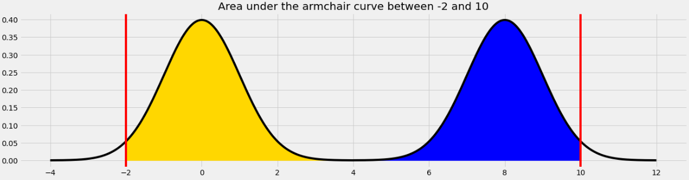
For the yellow area, we know that the area within 2 standard deviations of the mean on the standard normal curve is 0.95. The remaining 0.05 is split equally on both sides, so the yellow area is 0.975.
The blue area is the same by symmetry so the total shaded area is 0.975*2 = 1.95.
Equivalently, we can use the fact that the total area under the armchair curve is 2, and the amount of unshaded area on either side is 0.025, so the total shaded area is 2 - (0.025*2) = 1.95.
Difficulty: ⭐️⭐️
The average score on this problem was 76%.
Problem 3.2
What is the approximate value of area_between(0.37, 8.37)?
0.68
0.95
1
1.5
Answer: 1
The area we want to find is shown below in two colors.
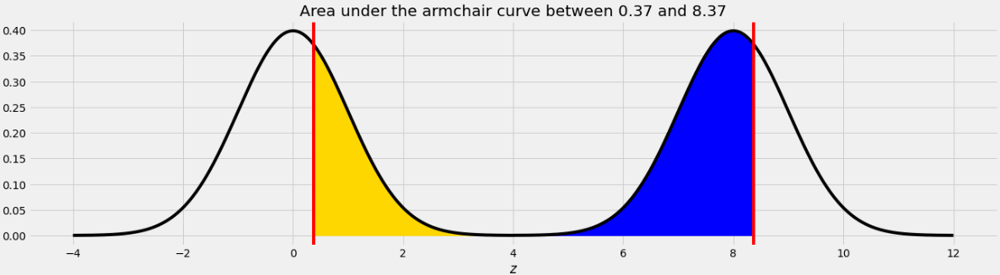
As we saw in Problem 12.2, the point on the left half of the armchair curve that corresponds to 8.37 is 0.37. This means that if we move the blue area from the right half of the armchair curve to the left half, it will fit perfectly, as shown below.
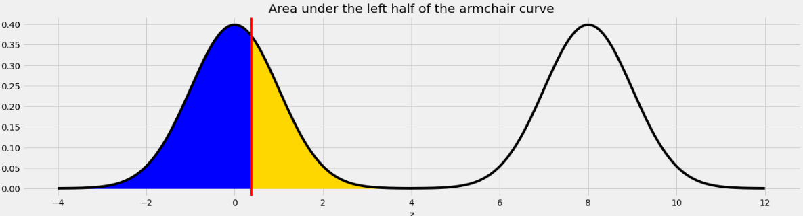
Therefore the total of the blue and yellow areas is the same as the area under one standard normal curve, which is 1.
Hector earned a 77 on an exam where the mean was 70 and the standard deviation was 5.
Clara earned an 80 on an exam where the mean was 75 and the standard deviation was 3.
Vivek earned an 83 on an exam where the mean was a 75 and the standard deviation was 6.
Rank these three students in ascending order of their exam performance relative to their classmates.
Hector, Clara, Vivek
Vivek, Hector, Clara
Clara, Hector, Vivek
Vivek, Clara, Hector
Answer: Vivek, Hector, Clara
To compare Vivek, Hector, and Clara’s relative performance we want to compare their Z scores to handle standardization. For Vivek, his Z score is (83-75) / 6 = 4/3. For Hector, his score is (77-70) / 5 = 7/5. For Clara, her score is (80-75) / 3 = 5/3. Ranking these, 5/3 > 7/5 > 4/3 which yields the result of Vivek, Hector, Clara.
The DataFrame concerts contains data on a sample of concerts held in 2024. For each concert, we have the name of the performing "artist", the "date" and "location" of the concert, and the total "attendance" as an integer. The first few rows of concerts are shown below:
Problem 5.1
You are interested in estimating the average "attendance" at concerts using the data in concerts. Fill in the blanks to define a function estimate_attendance that takes as input a number of estimates to produce, and returns an array with that number of bootstrapped estimates of the mean concert attendance.
def estimate_attendance(how_many):
estimates = np.array([])
for i in __(a)__:
resample = ___(b)__
estimates = np.append(estimates, __(c)__.mean())
return estimates
Suppose concert_interval comes out to [18500, 19500]. Which of the following statements are valid interpretations of this interval? Select all that apply.
There is an 85\% chance that the average attendance of all concerts is between 18500 and 19500.
85\% of all concerts have an attendance between 18500 and 19500.
If we were to make many different confidence intervals based on different samples of concerts, approximately 85\% of the resulting intervals would contain the true average concert attendance.
None of the above.
Answer: Option 3 only.
Difficulty: ⭐️⭐️
The average score on this problem was 84%.
Problem 5.4
You are told that the data in the "attendance" column of concerts has a mean of 19000 and a standard deviation of 3000. Find the endpoints of the smallest interval which is guaranteed to contain at least \frac{15}{16} of the data. Both endpoints should be given as integers.
Answer: [7000, 31000]
Difficulty: ⭐️⭐️⭐️
The average score on this problem was 74%.
Problem 5.5
You are now told that the data in the "attendance" column is normally distributed. Approximately what percentage of the data is included in the interval you gave above? Give your answer to the nearest integer.
The standard deviation of combined is less than 10.
The standard deviation of combined is greater than 10.
None of the above.
Answer: Options 2 and 4.
Difficulty: ⭐️⭐️
The average score on this problem was 83%.
Problem 6.2
Since he was in a rush, Ryan asked ChatGPT to write code that standardizes combined. To his surprise, 90\% of the standardized data is less than 0. Which of the following best explains this situation?
Ryan should be surprised; this must have incorrectly standardized the data.
Ryan should be surprised; a number of students cannot be negative.
Ryan should not be surprised; it’s possible for 100\% of the data to be below 0.
Your friend at SDSU records the number of students who visit their library each day, for 100 days. They tell you that the average is 6{,}000 and that the standard deviation is 500.
Problem 7.1
Without knowing anything about the distribution of your friend’s data, find the endpoints of the smallest interval which is guaranteed to contain at least 75\% of your friend’s data. Both endpoints should be given as integers.
Answer:[5000, 7000]
Difficulty: ⭐️⭐️⭐️
The average score on this problem was 64%.
Problem 7.2
If you then learn that your friend’s data is normally distributed, approximately what percentage of the data is actually contained in the interval you found above? Give your answer as an integer.
Beneath Gringotts Wizarding Bank, enchanted mine carts transport wizards through a complex underground railway on the way to their bank vault.
During one section of the journey to Harry’s vault, the track follows the shape of a normal curve, with a peak at x = 50 and a standard deviation of 20.
Problem 9.1
A ferocious dragon, who lives under this section of the railway, is equally likely to be located anywhere within this region. What is the probability that the dragon is located in a position with x \leq 10 or x \geq 80? Select all that apply.
Option 1: This code calculates the probability that a value lies outside the range between z = -2 and z = 1.5, which corresponds to x \leq 10 or x \geq 80. This is done by subtracting the area under the normal curve between -2 and 1.5 from 1. This is correct because it accurately captures the combined probability in the left and right tails of the distribution.
Option 2: This code multiplies the cumulative distribution function (CDF) at z = 1.75 by 2. This assumes symmetry around the mean and is used for intervals like |z| \geq 1.75, but that’s not what we want. The correct z-values for this problem are -2 and 1.5, so this option is incorrect.
Option 3: This code adds the probability of z \leq -2 and z \geq 1.5, using the fact that P(z \geq 1.5) = P(z \leq -1.5) by symmetry. So, while the code appears to show both as left-tail calculations, it actually produces the correct total tail probability. This option is correct.
Option 4: This is a static value with no basis in the z-scores of -2 and 1.5. It’s likely meant as a distractor and does not represent the correct probability for the specified conditions. This option is incorrect.
Difficulty: ⭐️⭐️
The average score on this problem was 88%.
Problem 9.2
Harry wants to know where, in this section of the track, the cart’s height is changing the fastest. He knows from his earlier public school education that the height changes the fastest at the inflection points of a normal distribution. Where are the inflection points in this section of the track?
x = 50
x = 20 and x = 80
x = 30 and x = 70
x = 0 and x = 100
Answer: x = 30 and x = 70
Recall that the inflection points of a normal distribution are located one standard deviation away from the mean. In this problem, the mean is x = 50 and the standard deviation is 20, so the inflection points occur at x = 30 and x = 70. These are the points where the curve changes concavity and where the height is changing the fastest. Therefore, the correct answer is x = 30 and x = 70.
Difficulty: ⭐️⭐️
The average score on this problem was 81%.
Problem 9.3
Next, consider a different region of the track, where the shape follows some arbitrary distribution with mean 130 and standard deviation 30. We don’t have any information about the shape of the distribution, so it is not necessarily normal.
Which of the following is the best lower bound that can be justified using Chebyshev’s inequality for the proportion of area within 100 \leq x \leq 190?
0.77
0.55
0.38
0.00
Answer: 0.00
We are told that the distribution is not necessarily normal. The mean is 130 and the standard deviation is 30. We’re asked for the minimum proportion of area between x = 100 and x = 190.
Since the distribution isn’t normal and we don’t know its shape, we can’t use the empirical rule (68-95-99.7) or z-scores. We might try using Chebyshev’s Inequality, but that only works for intervals that are equally far below the mean as above the mean. This interval is not like that (it’s 1 standard deviation below the mean and 2 above), so Chebyshev’s Inequality doesn’t apply. The most we can say using Chebyshev’s Inequality is that in the interval from 1 standard deviation below the mean to 1 standard deviation above the mean, we can get at least 1 - \frac{1}{1^2} = 0 percent of the data. We can’t make any additional guarantees. So, the minimum possible proportion of area is 0.00.
An IKEA chair designer is experimenting with some new ideas for armchair designs. She has the idea of making the arm rests shaped like bell curves, or normal distributions. A cross-section of the armchair design is shown below.
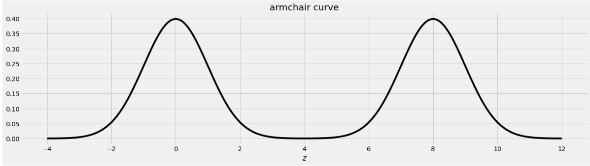
This was created by taking the portion of the standard normal distribution from z=-4 to z=4 and adjoining two copies of it, one centered at z=0 and the other centered at z=8. Let’s call this shape the armchair curve.
Since the area under the standard normal curve from z=-4 to z=4 is approximately 1, the total area under the armchair curve is approximately 2.
Complete the implementation of the two functions below:
area_left_of(z) should return the area under the armchair curve to the left of z, assuming -4 <= z <= 12, and
area_between(x, y) should return the area under the armchair curve between x and y, assuming -4 <= x <= y <= 12.
import scipydef area_left_of(z):'''Returns the area under the armchair curve to the left of z. Assume -4 <= z <= 12'''if ___(a)___: return ___(b)___ return scipy.stats.norm.cdf(z)def area_between(x, y):'''Returns the area under the armchair curve between x and y. Assume -4 <= x <= y <= 12.'''return ___(c)___
Problem 10.1
What goes in blank (a)?
Answer: z>4 or z>=4
The body of the function contains an if statement followed by a return statement, which executes only when the if condition is false. In that case, the function returns scipy.stats.norm.cdf(z), which is the area under the standard normal curve to the left of z. When z is in the left half of the armchair curve, the area under the armchair curve to the left of z is the area under the standard normal curve to the left of z because the left half of the armchair curve is a standard normal curve, centered at 0. So we want to execute the return statement in that case, but not if z is in the right half of the armchair curve, since in that case the area to the left of z under the armchair curve should be more than 1, and scipy.stats.norm.cdf(z) can never exceed 1. This means the if condition needs to correspond to z being in the right half of the armchair curve, which corresponds to z>4 or z>=4, either of which is a correct solution.
Difficulty: ⭐️⭐️⭐️
The average score on this problem was 72%.
Problem 10.2
What goes in blank (b)?
Answer: 1+scipy.stats.norm.cdf(z-8)
This blank should contain the value we want to return when z is in the right half of the armchair curve. In this case, the area under the armchair curve to the left of z is the sum of two areas:
the area under the entire left half of the armchair curve, which is 1, and
the area under the portion of the right half of the armchair curve that falls to the left of z.
Since the right half of the armchair curve is just a standard normal curve that’s been shifted to the right by 8 units, the area under that normal curve to the left of z is the same as the area to the left of z-8 on the standard normal curve that’s centered at 0. Adding the portion from the left half and the right half of the armchair curve gives 1+scipy.stats.norm.cdf(z-8).
For example, if we want to find the area under the armchair curve to the left of 9, we need to total the yellow and blue areas in the image below.
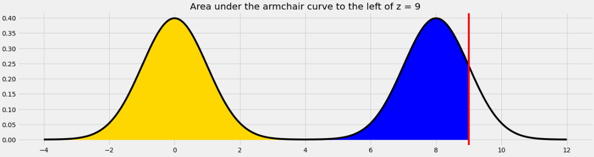
The yellow area is 1 and the blue area is the same as the area under the standard normal curve (or the left half of the armchair curve) to the left of 1 because 1 is the point on the left half of the armchair curve that corresponds to 9 on the right half. In general, we need to subtract 8 from a value on the right half to get the corresponding value on the left half.
Difficulty: ⭐️⭐️⭐️
The average score on this problem was 54%.
Problem 10.3
What goes in blank (c)?
Answer: area_left_of(y) - area_left_of(x)
In general, we can find the area under any curve between x and y by taking the area under the curve to the left of y and subtracting the area under the curve to the left of x. Since we have a function to find the area to the left of any given point in the armchair curve, we just need to call that function twice with the appropriate inputs and subtract the result.
Before getting selected for the Hunger Games, Katniss often spent her days hunting with her friend Gale. Hunting is illegal in Panem, so Katniss and Gale sold their poached game at a black market known as The Hob, always splitting the profits equally, even if one person’s kills were worth more than the other’s.
Problem 11.1
Suppose Katniss and Gale hunted together three times. The values of each person’s kills are recorded in katniss_sample and gale_sample, respectively. Their individual profits are recorded in average_sample. Calculate the mean and variance of each of these three samples. Give all of your answers as integers.
Suppose that the value of Katniss’s kills are normally distributed with mean \$50 and SD \$3, and the value of Gale’s kills are independently normally distributed with mean \$30 and SD \$2.
On one hunting trip, Katniss’s kills are worth twice as much as Gale’s, but the value of her kills in standard units is the same as the value of Gale’s kills in standard units. Determine the value of Gale’s kills on this hunting trip. Give your answer as an integer.
Answer: 10
If Katniss’s kills (K) are worth twice Gale’s kills (G) we can say that K = 2G. To get the standardized values of each of their kills we can use the formula:
\frac{\text{Kills on Trip} - \text{Mean Kills for Person}}{\text{Std Kills for Person}}
(This is just the regular standardization formula put in the context of this problem).
Furthermore, we know that their standardized values are equal from the problem statement, so after subtituting values in we get the below equality:
\frac{2G - 50}{3} = \frac{G - 30}{2}
Using some basic cross multiplication we can attempt to solve for G now.
4G - 100 = 3G - 90; G = 10
Difficulty: ⭐️⭐️
The average score on this problem was 85%.
Problem 11.3
Now, suppose that we no longer know whether the distribution of the value of Katniss’s kills is normal. All we know about this distribution is that it has mean \$50 and SD \$3.
Which of the following statements are true? Select all that apply.
It is possible that Katniss’s kills are never valued between \$48 and \$52.
No more than 75\% of Katniss’s kills are between \$44 and \$56 in value.
scipy.stats.norm.cdf(50) gives an approximation for the fraction of Katniss’s kills that are below \$50 in value.
None of these.
Answer: Choice 1 only
Choice 1 could be correct assuming our distribution is not normal, as there could be some sorta two point distribution that has no area under $47 to $53 meaning that Katniss’s kills are never valued in that range.
Choice 2 is False the range given in this choice encompasses 2 standard deviations. Per Chebyshev if we are 2 stds from the mean, at least 75% of the data must lie in our range, meaning there could be more than 75% of the data in this range.
Choice 3 is False aswell because the norm cdf required the assumption of normality.
Choice 4 is incorrect because the first statement is true.
Without making any assumptions about the data in chi_low, determine the minimum proportion of values that lie within 3 standard deviations of the mean. Give your answer as a simplified fraction.
Answer:\frac{8}{9}
Since we have made no assumptions about the data, we use Chebyshev’s inequality. We want to be within 3 SDs of the mean. Therefore, the proportion is:
1 - \frac{1}{3^2} = 1 - \frac{1}{9} = \frac{8}{9}
Difficulty: ⭐️⭐️
The average score on this problem was 76%.
Problem 12.2
You are told that the mean of chi_low is -7^\circC and the standard deviation is 6^\circC. Define a variable x such that x.mean() calculates the actual proportion of values that lie within 3 standard deviations of the mean.
If x is a Boolean series, then taking the mean of x is equivalent to finding the proportion of True values in x. (Recall that True = 1 and False = 0, so taking the mean is equivalent to counting all instances of True then dividing by the total number of entries in the Series.)
All answer options above create a Boolean series x that checks whether each entry in chi_low belongs to the range [-25, 11]. As a result, x.mean() will tell us the proportion of values within 3 SDs of the mean.
Difficulty: ⭐️⭐️⭐️⭐️
The average score on this problem was 30%.
Problem 12.3
You’re now given a density histogram with the full distribution of data in chi_low. Recall this data has a mean of -7^\circC and a standard deviation of 6^\circC.
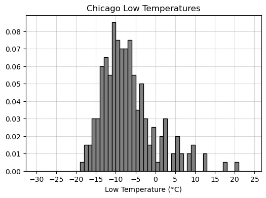
Use the histogram to calculate the proportion of values that lie within 3 standard deviations of the mean. Your answer should be a number between 0 and 1, to two decimal places.
Answer: 0.98
We use our answer to part (b) and check the proportion of values that belong to the interval [-25, 11]. Note that all values are at least as large as -25. However, there are three “bars” that lie above 11. These are the values that lie outside 3 SDs of the mean. If we find the proportion of values represented in these three bars, we can subtract this proportion from 1 to find the proportion of values that lie within 3 SDs of the mean.
To compute proportion, we find the area of each bar. The width of each bar is 1, and the heights of the three bars are 0.01, 0.005, 0.005 (approximately). Their total area is therefore:
1(0.01 + 0.005 + 0.005) = 0.02
Hence 1 - 0.02 = 0.98 is the proportion of values within 3 SDs of the mean.
Difficulty: ⭐️⭐️⭐️
The average score on this problem was 68%.
Problem 12.4
On the warmest Chicago day recorded in snow, the low temperature was 20^\circC. Express this temperature in standard units relative to other Chicago lows. Give your answer as an exact decimal.
Answer: 4.5
Recall the formula for x in standard units:
\frac{x - \text{mean}}{\text{SD}}
When x = 20, mean is -7, and SD is 6, the corresponding value in standard units is:
Suppose we collected four times as much data as currently depicted in the histogram above, then plotted a new histogram of the larger data set. How would we expect the standard deviation of temperatures to change?
Decrease by a factor of 4.
Decrease by a factor of 2.
No substantial change.
Increase by a factor of 2.
Increase by a factor of 4.
Answer: No substantial change.
Note that this is not a distribution of sample statistics, but a distribution of a sample itself. Hypothetically, if we collected many more individual low temperatures, we would expect them to be distributed similarly to our current sample. Thus, the SD will stay generally the same.
(It would also help to recall that the sample standard deviation can be used to approximate the population standard deviation. Thus, if the initial sample size is “large enough,” increasing the sample size should not substantially change the approximation of the population standard deviation.)
Difficulty: ⭐️⭐️⭐️⭐️⭐️
The average score on this problem was 24%.
Problem 12.6
What kind of distribution does the histogram depict?
Probability distribution.
Empirical distribution.
Categorical distribution.
None of the above.
Answer: Empirical distribution.
The probability distribution is a theoretical model and is generally not known. Since we only have a sample of low temperatures, there are many more not included in the distribution. Thus, the histogram cannot represent the true probability distribution.
This is not a categorical distribution because "low_temp" is a quantitative variable.
This is an empirical distribution, because it depicts the distribution of our observed data.
Suppose that in Olympic ski jumping, ski jumpers jump off of a ramp that’s shaped like a portion of a normal curve. Drawn from left to right, a full normal curve has an inflection point on the ascent, then a peak, then another inflection point on the descent. A ski jump ramp stops at the point that is one third of the way between the inflection point on the ascent and the peak, measured horizontally. Below is an example ski jump ramp, along with the normal curve that generated it.
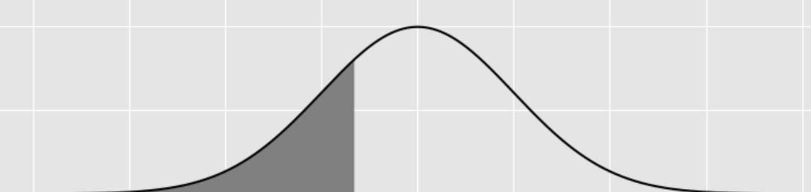
Fill in the blank below so that the expression evaluates to the area of a ski jump ramp, if the area under the normal curve that generated it is 1.
from scipy import stats stats.norm.cdf(______)
What goes in the blank?
Answer:-2/3
We know that the normal distribution is symmetric about the mean, and that the mean is the “peak” described in the graph. The inflection points occur one standard deviation above and below the mean (the peak), so a point which is one third of the way in between the first inflection point and the peak is -(1-\frac{1}{3}) = -\frac{2}{3} standard deviations from the mean. We can then use stats.norm.cdf(-2/3) to calculate the area under the curve to the left of this point.
Difficulty: ⭐️⭐️⭐️
The average score on this problem was 51%.
Problem 13.2
Suppose that in Olympic downhill skiing, skiers compete on mountains shaped like normal distributions with mean 50 and standard deviation 8. Skiers start at the peak and ski down the right side of the mountain, so their x-coordinate increases.
Keenan is an Olympic downhill skier, but he’s only been able to practice on a mountain shaped like a normal distribution with mean 65 and standard deviation 12. In his practice, Keenan always crouches down low when he reaches the point where his x-coordinate is 92, which helps him ski faster. When he competes at the Olympics, at what x-coordinate should he crouch down low, corresponding to the same relative location on the mountain?
Answer: 68
Since we know that both slopes are normal distributions (just scaled and shifted), we can derive this answer by writing Keenan’s crouch point in terms of standard deviations from the mean. He typically crouches at 92 feet, whose distance from the mean (in standard deviations) is given by \frac{92 - 65}{12} = 2.25. So, all we need to do is find what number is 2.25 standard deviations from the mean in the Olympic mountain. This is given by 50 + (2.25 * 8) = 68
Difficulty: ⭐️⭐️⭐️
The average score on this problem was 72%.
Problem 13.3
Aaron is another Olympic downhill skier. When he competes on the normal curve mountain with mean 50 and standard deviation 8, he crouches down low when his x-coordinate is 54. If the total area of the mountain is 1, approximately how much of the mountain’s area is ahead of Aaron at the moment he crouches down low?
0.1
0.2
0.3
0.4
Answer: 0.3
We know that when Aaron reaches the mean (50), exactly 0.5 of the mountain’s area is behind him, since the mean and median are equal for normal distributions like this one. We also see that 54 is one half of a standard deviation away from the mean. So, all we have to do is find out what proportion of the area is within half a standard deviation of the mean. Using the 68-95-99.7 rule, we know that 68% of the values lie within one standard deviation of the mean to both the right and left side. So, this means 34% of the values are within one standard deviation on one side and at least 17% are within half a standard deviation on one side. Since the area is 1, the area would be 0.17. So, by the time Aaron reaches an x-coordinate of 54, 0.5 + 0.17 = 0.67 of the mountain is behind him. From here, we simply calculate the area in front by 1 - 0.67 = 0.33, so we conclude that approximately 0.3 of the area is in front of Aaron.
Note: As a clafrification, the 0.17 is an estimate, specifically, an underestimate, due to the shape of the normal distribution. Thse area under a normal distribution is not proportional to how many standard deviations far away from the mean you are.
You are told that scipy.stats.norm.cdf(-1.4) evaluates to 0.08075665923377107. Suppose you have a standard normal curve with mean at x=0 and standard deviation 1. What is the area under the curve from x=0 to x=1.4? Give your answer as a number rounded to 2 decimal places.
A jump is considered a long jump if it is at least 100 millimeters in length. Sofia creates a new DataFrame called long, containing only the rows in elise that correspond to long jumps. Suppose the distribution of the "distance" column in long is approximately normal, with mean 144 and variance 36.
Problem 16.1
Fill in the blank to add a new column to long called "distance_su", containing the same information as the "distance" column but converted to standard units.
standard_units = __(a)__
long = long.assign(distance_su = standard_units)
(a): (long.get("distance") - 144)/6
Difficulty: ⭐️⭐️⭐️
The average score on this problem was 51%.
Problem 16.2
Is "distance_su" approximately normally distributed?
Yes
No
Answer: Yes
Difficulty: ⭐️
The average score on this problem was 91%.
Problem 16.3
Assume we have run from scipy import stats. Using stats.norm.cdf, write a Python expression that evaluates to the approximate proportion of distances in long that are at least 140 millimeters.
Answer: 1 - stats.norm.cdf(-2/3)
Difficulty: ⭐️⭐️⭐️⭐️
The average score on this problem was 36%.
Problem 16.4
The data in long can be thought of a sample from the population of all long jumps that Elise takes. Suppose we use the data in long to create a 95% CLT-based confidence interval for the mean distance of all long jumps by Elise (a population parameter). The resulting interval is wider than we’d like, so we decide to collect a new sample that is just large enough to guarantee that the width of the resulting 95% confidence interval is no more than \frac32, assuming the new sample has the same standard deviation as the original. How large of a sample should we take? Give your answer as an integer.
Jumping spiders prefer humidity to be between 50 and 70 percent. Suppose the "humidity" column has mean 60, and the range [48, 72] is the smallest range guaranteed to contain at least 75\% of the values in "humidity". What is the standard deviation of "humidity"?
For this question only, suppose we know that summer.get("students") is normally distributed. You randomly select one number from summer.get("students"). Using the function scipy.stats.norm.cdf, write one line of code that evaluates to the probability that the number you selected is in the range [30,45].
This summer, Zoe wants to explore parts of the United States that she hasn’t been to yet. In her process of figuring out where to go, she creates a histogram depicting the distribution of the number of sunshine hours in July across all cities in the United States in sun.
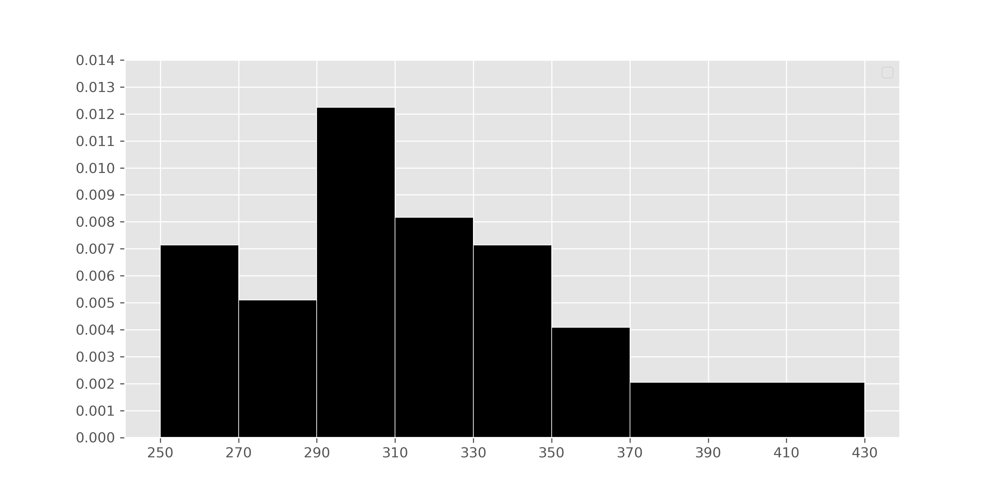
Suppose usa is a DataFrame with all of the columns in sun but with only the rows where "Country" is "United States".
cond is a Series that contains True for each row in usa where "Jul" is greater than or equal to 370 and less than 430. mystery, then, is the percentage of values in usa in which cond is True. This is because np.count_nonzero(cond) is the number of Trues in cond, np.count_nonzero(cond) / usa.shape[0] is the proportion of values in cond that are True, and 100 * np.count_nonzero(cond) / usa.shape[0] is the percentage of values in cond that are True. Our goal here, then, is to use the histogram to find the percentage of values in the histogram between 370 (inclusive) and 430 (exclusive).
We know that in histograms, the area of each bar is equal to the proportion of data points that fall within its bin’s range. Conveniently, there’s only one bar we need to look at – the one corresponding to the bin [370, 430). That bar has a width of 430 - 370 = 60 and a height of 0.002. Then, the area of that bar – i.e. the proportion of values that are between 370 (inclusive) and 430 (exclusive) is:
This means that the proportion of values in [370, 430) is 0.12, which means that the percentage of values in [370, 430) is 12%, and that mystery evaluates to 12.
Difficulty: ⭐️⭐️
The average score on this problem was 83%.
Problem 19.2
There are 5 more cities with between 370 and 430 sunshine hours in July than there are cities with between 270 and 290 sunshine hours in July.
How many cities in the United States are in sun? Give your answer as a positive integer, rounded to the nearest multiple of 10 (that is, your answer should end in a 0).
Answer: 250
In the previous part, we learned that the proportion of cities in the usa DataFrame in the interval [370, 430) (i.e. that have between 370 and 430 sunshine hours in July) is 0.12. To use the fact that there are 5 more cities in the interval [370, 430) than there are in the interval [270, 290), we need to first find the proportion of cities in the interval [270, 290). To do so, we look at the [270, 290) bin, which has a width of 290 - 270 = 20 and a height of 0.005:
\text{proportion} = 0.005 \cdot 20 = 0.10
We are told that there are 5 more cities in the [370, 430) interval than there are in the [270, 290) interval. Given the proportions we’ve computed, we have that:
\text{difference in proportions} = 0.12 - 0.1 = 0.02
If 0.02 \cdot \text{number of cities} is 5, then \text{number of cities} = 5 \cdot \frac{1}{0.02} = 5 \cdot 50 = 250.
Difficulty: ⭐️⭐️⭐️⭐️
The average score on this problem was 49%.
Now, suppose we convert the number of sunshine hours in July for all cities in the United States (i.e., “US cities”) in sun from their original units (hours) to standard units.
Problem 19.3
Let m be the mean number of sunshine hours in July for all US cities in sun, in standard units. Select the true statement below.
m = -1
-1 < m < 0
m = 0
0 < m < 1
m = 1
m > 1
Answer: m = 0
When we standardize a dataset, the mean of the resulting values is always 0 and the standard deviation of the resulting values is always 1. This tells us right away that the answer is m = 0. Intuitively, we know that a value in standard units represents the number of standard deviations that value is above or below the mean of the column it came from. m is equal to the mean of the column it came from, so m in standard units is 0.
If we’d like to approach this more algebracically, we can remember the formula for converting a value x_i from a column x to standard units:
x_{i \: \text{(su)}} = \frac{x_i - \text{mean of } x}{\text{SD of } x}
Let x be the column (i.e. Series) containing the mean number of sunshine hours in July for all US cities in sun. m, by definition, is the mean of x. Then,
m_{\text{(su)}} = \frac{m - \text{mean of } x}{\text{SD of } x} = \frac{m - m}{\text{SD of }x} = 0
Given that m is the mean of column x, the numerator of m_\text{(su)} is 0, and hence m_\text{(su)} is 0.
Difficulty: ⭐️⭐️⭐️
The average score on this problem was 62%.
Problem 19.4
Let s be the standard deviation of the number of sunshine hours in July for all US cities sun, in standard units. Select the true statement below.
s = -1
-1 < s <0
s = 0
0 < s < 1
s = 1
s > 1
Answer: s = 1
As mentioned in the previous solution, when we standardize a dataset, the mean of the resulting values is always 0 and the standard deviation of the resulting values is always 1.
Difficulty: ⭐️⭐️⭐️⭐️
The average score on this problem was 46%.
Problem 19.5
Let d be the median of the number of sunshine hours in July for all US cities in sun, in standard units. Select the true statement below.
d = -1
-1 < d < 0
d = 0
0 < d < 1
d = 1
d > 1
Answer: -1 < d < 0
In the histogram, we see that the distribution of the number of sunshine hours in July for all US cities in sunis skewed right, or has a right tail. This means that this distribution’s mean is dragged in the direction of its tail and is larger than its median. Since the mean in standard units is 0, and the median is less than the mean, the median in standard units must be negative. There’s no property that states that the median is exactly -1, and the median is only slightly less than the mean, which means that it must be the case that -1 < d < 0.
Difficulty: ⭐️⭐️⭐️⭐️
The average score on this problem was 42%.
Problem 19.6
True or False: The distribution of the number of sunshine hours in July for all US cities in sun, in standard units, is roughly normal.
True
False
Impossible to tell
Answer: False
The original histogram depicting the distribution of the number of sunshine hours in July for all US cities is right-skewed. When data is converted to standard units, the shape of the distribution does not change. Therefore, if the original data is right-skewed, the standardized data will also be right-skewed.
Recall that the mean points per game is 7, with a standard deviation of 5. Also note that for all players, points per game must be greater than or equal to 0.
Using Chebyshev’s inequality, we find that at least p\% of players scored 25 or fewer points per game.
What is the value of p? Give your answer as number between 0 and 100, rounded to 3 decimal places.
Answer:92.284\%
Recall, Chebyshev’s inequality states that the proportion of values within z standard deviations of the mean is at least1 - \frac{1}{z^2}.
To approach the problem, we’ll start by converting 25 points per game to standard units. Doing so yields \frac{25 - 7}{5} = 3.6. This means that 25 is 3.6 standard deviations above the mean. The value 3.6 standard deviations below the mean is 7 - 3.6 \cdot 5 = -11, so when we use Chebyshev’s inequality with z = 3.6, we will get a lower bound on the proportion of values between -11 and 25. However, as the question tells us, points per game must be non-negative, so in this case the proportion of values between -11 and 25 is the same as the proportion of values between 0 and 25 (i.e. the proportion of values less than or equal to 25).
When z = 3.6, we have 1 - \frac{1}{z^2} = 1 - \frac{1}{3.6^2} = 0.922839, which as a percentage rounded to three decimal places is 92.284\%. Thus, at least 92.284\% scored 25 or fewer points per game.
Difficulty: ⭐️⭐️⭐️⭐️
The average score on this problem was 46%.
Problem 20.2
Note: This problem is out of scope; it covers material no longer included in the course.
Note: This question uses the mathematical definition of percentile, not np.percentile.
The array aces defined below contains the points per game scored by all members of the Las Vegas Aces. Note that it contains 14 numbers that are in sorted order.
As we saw in lab, percentiles are not unique. For instance, the number 1.05 is both the 15th percentile and 16th percentile of aces.
There is a positive integer q, between 0 and 100, such that 14.24 is the qth percentile of aces, but 14.81 is the (q+1)th percentile of aces.
What is the value of q? Give your answer as an integer between 0 and 100.
Answer: 85
For reference, recall that we find the pth percentile of a collection of n numbers as follows:
Sort the collection in increasing order.
Define h to be p\% of n:
h = \frac{p}{100} \cdot n
If h is an integer, define k = h. Otherwise, let k be the smallest integer greater than h.
Take the kth element of the sorted collection (start counting from 1, not 0).
To start, it’s worth emphasizing that there are n = 14 numbers in aces total. 14.24 is at position 12 (when the positions are numbered 1 through 14).
Let’s try and find a value of p such that 14.24 is the pth percentile. To do so, we might try and find what “percentage” of the way through the distribution 14.24 is; doing so gives \frac{12}{14} = 85.71\%. If we follow the process outlined above with p = 85, we get that h = \frac{85}{100} \cdot 14 = 11.9 and thus k = 12, meaning that the 85th percentile is the number at position 12, which 14.24.
Let’s see what happens when we try the same process with p = 86. This time, we have h = \frac{86}{100} \cdot 14 = 12.04 and thus k = 13, meaning that the 86th percentile is the number at position 13, which is 14.81.
This means that the value of q is 85 – the 85th percentile is 14.24, while the 86th percentile is 14.81.
Suppose variables v1, v2, v3, and v4, have already been initialized to specific numerical values. Right now, we don’t know what values they’ve been set to.
The function f shown below takes in a number, v, and outputs an integer between -2 and 2, depending on the value of v relative to v1, v2, v3, and v4.
def f(v):if v <= v1:return-2elif v <= v2:return-1elif v <= v3:return0elif v <= v4:return1else:return2
Recall that in the previous problem, we created an array called sample_means containing 10,000 values, each of which is the mean of a random sample of 100 applicant ages drawn from the DataFrame apps, in which ages have a mean of 35 and a standard deviation of 10.
When we call the function f on every value v in sample_means, we produce a collection of 10,000 values all between -2 and 2. A density histogram of these values is shown below.
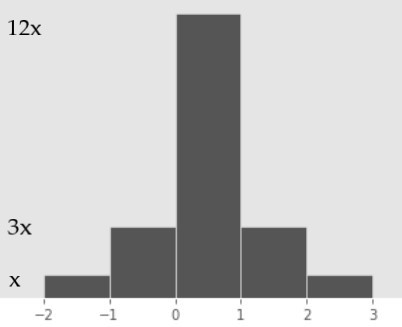
The heights of the five bars in this histogram, reading from left to right, are
x, 3x, 12x, 3x, x.
Problem 21.1
What is the value of x (i.e. the height of the shortest bar in the histogram)? Give your answer as a fully simplified fraction.
Answer: \frac{1}{20}
In any density histogram, the total area of all bars is 1. This histogram has five bars, each of which has a width of 1 (e.g. 3 - 2 = 1). Since \text{Area} = \text{Height} \cdot \text{Width}, we have that the area of each bar is equal to its height. So, the total area of the histogram in this case is the sum of the heights of each bar:
\text{Total Area} = x + 3x + 12x + 3x + x = 20x
Since we know that the total area is equal to 1, we have
20x = 1 \implies \boxed{x = \frac{1}{20}}
Difficulty: ⭐️⭐️⭐️
The average score on this problem was 72%.
Problem 21.2
What does the expression below evaluate to? Give your answer as an integer.
Hint: Don’t try to find the values of v2 and v4 – you can answer this question without them!
Answer: 7,500
First, it’s a good idea to understand what the integer we’re trying to find actually means in the context of the information provided. In this case, it’s the number of sample means that are greater than v2 and less than or equal to v4. Here’s how to arrive at that conclusion:
First, note that sample_means is an array of length 10,000.
sample_means > v2 and sample_means <= v4 are both Boolean arrays of length 10,000.
(sample_means > v2) & (sample_means <= v4) is also a Boolean array of length 10,000, which contains True for every sample mean that is greater than v2 and less than or equal to v4 and False for every other sample mean.
Finally, np.count_nonzero((sample_means > v2) & (sample_means <= v4)) is a number between 0 and 10,000, corresponding to the number of True elements in the array (sample_means > v2) & (sample_means <= v4).
Remember, the histogram we’re looking at visualizes the distribution of the 10,000 values that result from calling f on every value in sample_means. To proceed, we need to understand how the function f decides what value to return for a given input, v:
If the input v is greater than v2, then the first two conditions (v <= v1 and v <= v2) are False, and so the only possible values of f(v) are 0, 1, or 2.
If the input v is less than or equal to v4, the only possible values of f(v) are -2, -1, 0, 1.
Thus, if the input v is greater than v2and less than or equal to v4, the only possible values of f(v) are 0 and 1.
Now, our job boils down to finding the number of values in the visualized distribution that are equal to 0 or 1. This is equivalent to finding the number of values that fall in the [0, 1) and [1, 2) bins – since f only returns integer values, the only value in the [0, 1) bin is 0 and the only value in the [1, 2) bin is 1 (remember, histogram bins are left-inclusive and right-exclusive).
To do this, we need to find the proportion of values in those two bins, and multiply that proportion by the total number of values (10,000).
We know that the area of a bar is equal to the proportion of values in that bin. We also know that, in this case, the area of each bar is equal to its height, since the width of each bin is 1. Thus, the proportion of values in a given bin is equal to the height of the corresponding bar. As such, the proportion of values in the [0, 1) bin is 12x, and the proportion of values in the [1, 2) bin is 3x, meaning the proportion of values in the histogram that are equal to either 0 or 1 is 12x + 3x = 15x.
In the previous subpart, we found that x = \frac{1}{20}, so the proportion of values in the histogram that are equal either 0 or 1 is 15 \cdot \frac{1}{20} = \frac{3}{4}*, and since there are 10,000 values being visualized in the histogram total, \frac{3}{4} \cdot 10,000 = 7,500 of them are equal to either 0 or 1.
Thus, 7,500 of the values in sample_means are greater than v2 and less than or equal to v4, so np.count_nonzero((sample_means > v2) & (sample_means <= v4)) evaluates to 7,500.
Note: It’s possible to answer this subpart without knowing the value of x, i.e. without answering the previous subpart. The area of the [0, 1) and [1, 2) bars is 15x, and the total area of the histogram is 20x. So, the proportion of the area in [0, 1) or [1, 2) is \frac{15x}{20x} = \frac{15}{20} = \frac{3}{4}, which is the same value we found by substituting x = \frac{1}{20} into 15x.
Difficulty: ⭐️⭐️⭐️⭐️
The average score on this problem was 40%.
Suppose we have run the code below.
from scipy import statsdef g(u):return stats.norm.cdf(u) - stats.norm.cdf(-u)
Several input-output pairs for the function g are shown in the table below. Some of them will be useful to you in answering the questions that follow.
u
g(u)
0.84
0.60
1.28
0.80
1.65
0.90
2.25
0.975
Problem 21.3
What is the value of v3, one of the variables used in the function f? Give your answer as a number.
Hint: Use the histogram as well as one of the rows of the table above.
Answer: 35.84
The table provided above tells us the proportion of values within u standard deviations of the mean in a normal distribution, for various values of u. For instance, it tells us that the proportion of values within 1.28 standard deviations of the mean in a normal distribution is 0.8.
Let’s reflect on what we know at the moment:
The distribution of the sample mean is roughly normal, by the Central Limit Theorem. Normal distributions are symmetric, and have a “peak” at the center. The histogram above is also symmetric and has its peak at its center.
The proportion of values in the histogram that are equal to 0 is 12x = 12 \cdot \frac{1}{20} = 0.6.
The function f returns 0 for all inputs that are greater than v2 and less than or equal to v3. This, combined with the fact above, tells us that the proportion of sample means between v2 (exclusive) and v3 (inclusive) is 0.6.
From the table provided, we know that in a normal distribution, the proportion of values within 0.84 standard deviations of the mean is 0.6.
Combining the facts above, we have that v2 is 0.84 standard deviations below the mean of the sample mean’s distribution and v3 is 0.84 standard deviations above the mean of the sample mean’s distribution.
The sample mean’s distribution has the following characteristics:
\begin{align*}
\text{Mean of Distribution of Possible Sample Means} &= \text{Population Mean} = 35 \\
\text{SD of Distribution of Possible Sample Means} &= \frac{\text{Population SD}}{\sqrt{\text{Sample Size}}} = \frac{10}{\sqrt{100}} = 1
\end{align*}
0.84 standard deviations above the mean of the sample mean’s distribution is:
Which of the following is closest to the value of the expression below?
np.percentile(sample_means, 5)
14
14.75
33
33.35
33.72
Answer: 33.35
The table provided tells us that in a normal distribution, 90% of values are within 1.65 standard deviations of the mean. Since normal distributions are symmetric, it also means that 5% of values are above 1.65 standard deviations of the mean and, more importantly, 5% of values are below 1.65 standard deviations of the mean.
The 5th percentile of a distribution is the smallest value that is greater than or equal to 5% of values, so in this case the 5th percentile is 1.65 SDs below the mean. As in the previous subpart, the mean and SD we are referring to are the mean and SD of the distribution of sample means (sample_means), which we found to be 35 and 1, respectively.
Australia is in the southern hemisphere, meaning that its summer season is from December through February, when we have our winter. As a result, January is typically one of the sunniest months in Australia!
Arjun is a big fan of the movie Kangaroo Jack and plans on visiting Australia this January. In doing his research on where to go, he found the number of sunshine hours in January for the 15 Australian cities in sun and sorted them in descending order.
Since 12 is an integer, we don’t need to round up, so k = 12. Starting from the right-most number, which is the smallest number and hence position 1 here, the 12th number is 306.
Difficulty: ⭐️⭐️⭐️
The average score on this problem was 52%.
Problem 22.2
What is the largest positive integer p such that 257 is the pth percentile of the collection of numbers above?
Answer: 40
The first step is to find the position of 257 in the collection when we start at position 1, which is 6. Since there are 15 values total, this means that 257 is the smallest value that is greater than or equal to 40% of the values.
If we set p to be any number larger than 40, say, 41, then 257 won’t be larger than p\% of the values in the collection; thus, the largest positive integer value of p that makes 257 the pth percentile is 40.
Difficulty: ⭐️⭐️⭐️⭐️
The average score on this problem was 30%.
Problem 22.3
What is the smallest positive integer p such that 257 is the pth percentile of the collection of numbers above? (Make sure your answer to (c) is smaller than your answer to (b)!)
Answer: 34
Let’s look at the next number down from 257, which is 255. 255 is the 5th number out of 15, so it is the smallest number that is greater than or equal to 33.333% of the values. This means the 33rd percentile is also 255, since 33.333 > 33. However, 255 is not greater than or equal to 34% of the values, which makes the 34th percentile 257. Therefore, 34 is the smallest integer value of p such that the pth percentile is 257.
Difficulty: ⭐️⭐️⭐️⭐️⭐️
The average score on this problem was 21%.
Teresa also wants to go to Australia, but can’t take time off work in January, and so she plans a trip to The Land Down Under (Australia) in February instead. She finds that the mean number of sunshine hours in February for all 15 Australian cities in sun is 250, with a standard deviation of 15.
Problem 22.4
According to Chebyshev’s inequality, at least what percentage of Australian cities in sun see between 200 and 300 sunshine hours in February?
9%
30%
33.3%
91%
95%
99.73%
Answer: 91%
First, we need to find the number of standard deviations above the mean 300 is, and the number of standard deviations below the mean 200 is.
z = \frac{300 - 250}{15} = \frac{50}{15} = \frac{10}{3}
The above equation tells us that 300 is \frac{10}{3} standard deviations above the mean; you can verify that 200 is the same number of standard deviations below the mean. Chebyshev’s inequality tells us the proportion of values within z SDs of the mean is at least 1 - \frac{1}{z^2}, which here is: